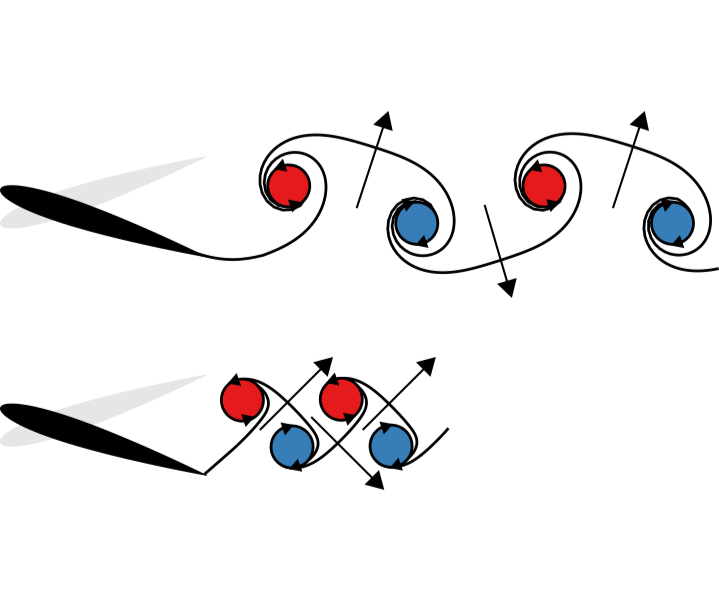

 Swimmers' wakes are not reliable indicators of swimming performance
Swimmers' wakes are not reliable indicators of swimming performance
D. Floryan, T. Van Buren, and A. J. Smits, under review
arXiv: 1906.10826
Quickly:
Swimmers' wakes can be misleading. The two wakes in the image, for example, result in the same thrust, even though conventional wisdom would tell us that the bottom one produces much greater thrust.
Abstract:
The structure of swimmers' wakes is often assumed to be an indicator of swimming performance. Here, we discuss three cases where this assumption fails. In general, great care should be taken in deriving any conclusions about swimming performance from the wake flow pattern.